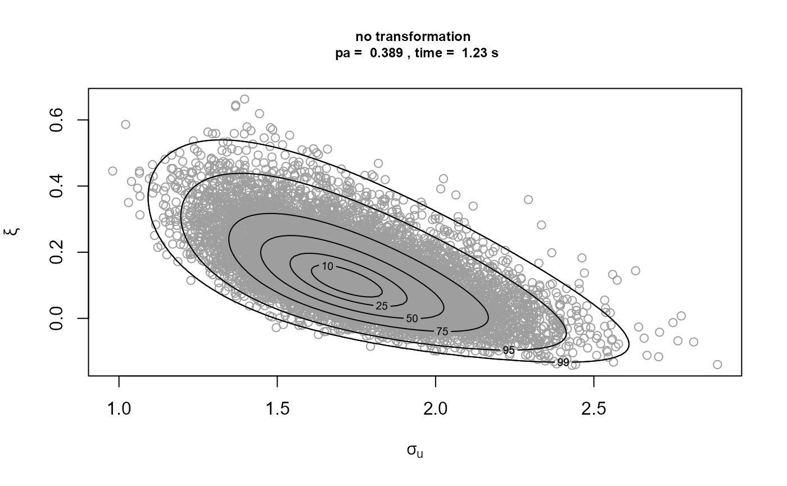
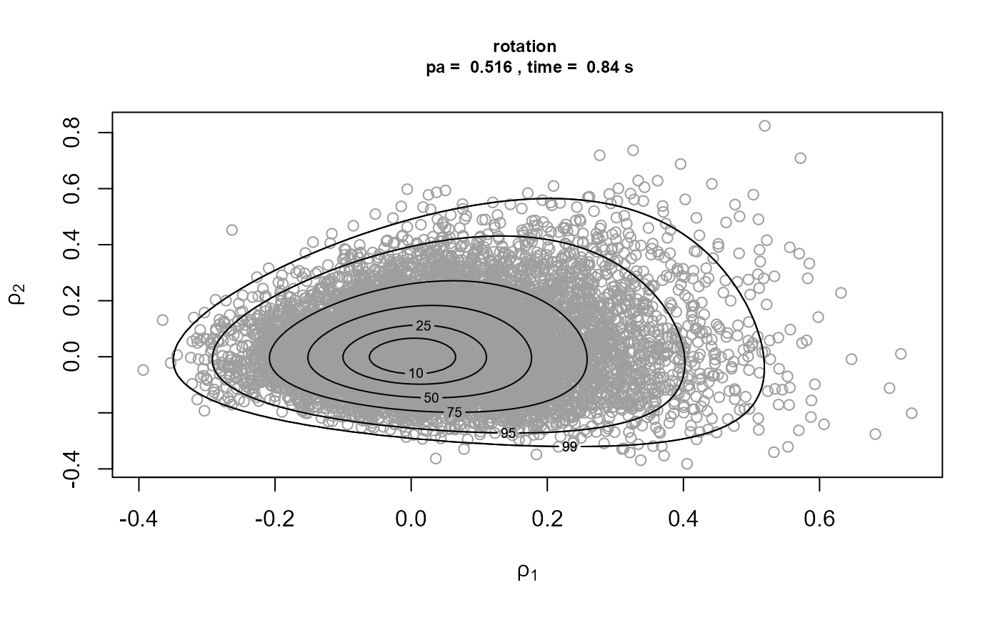

Introducing revdbayes: Ratio-of-Uniforms Sampling for Bayesian Extreme Value Analysis
Paul J. Northrop
2021-09-18
Source:vignettes/revdbayes-a-vignette.Rmd
revdbayes-a-vignette.RmdThis vignette focuses on random sampling from extreme value posterior distributions using the function rpost. From version 1.2.0 onwards sampling can be achieved more quickly using the function rpost_rcpp. See the vignette Faster simulation using revdbayes for details.
Performing posterior predictive extreme value inference using posterior samples is covered in a separate vignette Posterior Predictive Extreme Value Inference using the revdbayes Package
The revdbayes package
The revdbayes package tackles the same problem as the evdbayes package (Stephenson and Ribatet 2014), that is, sampling from posterior distributions that occur in some relatively simple Bayesian extreme value analyses. The essential difference between these two packages is that evdbayes performs sampling using Markov Chain Monte Carlo (MCMC) techniques, whereas revdbayes uses the generalised ratio-of-uniforms method (Wakefield, Gelfand, and Smith 1991), implemented using the rust package (Northrop 2017). Otherwise, these two packages have similar functionality and their functions have a similar syntax. For example, a prior distribution specified using one package may be used in posterior sampling implemented by the other. For details of setting prior distributions see the set_prior function.
For details of Bayesian extreme value analyses see the review of Stephenson (2016) and the evdbayes user guide (available in the evdbayes doc directory). Typically, MCMC is used to sample from extreme value posterior distributions. This requires tuning parameters of the MCMC algorithm to be set and results in a dependent sample from the posterior. Diagnostics checks, based on running multiple chains from different starting values, are used to check convergence and to decide which values should be discarded prior to approximate convergence. An advantage of using a direct method of simulation, such as the generalised ratio-of-uniforms method, is that it produces a random sample from the posterior distribution. This method also involves tuning parameters, but the revdbayes package has been designed to set those automatically.
The current version of revdbayes samples from posterior distributions based on the Generalised Extreme Value (GEV) model, the Generalised Pareto (GP) model, the point process (PP) model and the r-largest order statistics (OS) model. The evdbayes package offers in addition some extreme value regression models.
We consider how to use the two main functions in revdbayes, namely set_prior (used to define the prior distribution) and rpost (used to sample from the posterior distribution). We use the examples in the evdbayes user guide for illustration and as a check that the two packages, evdbayes and revdbayes produce comparable results. Please see the evdbayes user guide for details of the models underlying these analyses.
The ratio-of-uniforms method
The ratio-of-uniforms method is an acceptance-rejection type of simulation algorithm. A crude measure of the efficiency of the algorithm is the probability \(p_a\) that a proposed value is accepted. In the rust package (Northrop 2017) variable transformation is used to increase \(p_a\). In the current context two transformations are of interest: (i) marginal Box-Cox transformation of (positive functions of) extreme value parameters (using argument trans = "BC" to rpost instead of the default trans = "none"), and/or (ii) rotation of parameter axes about the estimated mode of the posterior (the default rotate = TRUE instead of the rotate = FALSE), based on the estimated Hessian of the log-posterior at this mode. Transformation (i) seeks to reduce skewness in the marginal posterior distributions. Transformation (ii) tends to reduce posterior dependence between the parameters. The ratio-of-uniforms algorithm is then performed after relocating the mode of the posterior to the origin, because this tends to increase the probability of acceptance (Wakefield, Gelfand, and Smith 1991).
For details of the ratio-of-uniforms method and the transformations used see the vignette of the rust package (Northrop 2017). In the rust vignette it is argued that the largest attainable value of \(p_a\) for a typical \(d\)-dimensional problem is the value resulting from the special case of a \(d\)-dimensional normal distribution with independent components. For \(d=2\) this value is 0.534, for \(d=3\) the value is 0.316. In an object ru_object returned from rpost an estimate of this probability is given by ru_object$pa. The examples presented in this vignette suggest that often rotation to reduce dependence is more helpful than marginal transformation to reduce skewness. This (trans = "none" and rotate = TRUE) is the default setting of rpost and seems to work well enough for most problems.
The computations in the following sections were performed using a notebook containing a 3.0GHz Intel processor and 8GB RAM.
Generalised Pareto (GP) model
The GP distribution is used to model threshold excesses, that is, the amounts by which threshold exceedances exceed some threshold. It has two parameters: a scale parameter \(\sigma_u\) and shape parameter \(\xi\). We use the following example to illustrate the use of the transformation strategies implemented by the arguments rotate and trans to rpost and how the user can specify their own prior distribution.
Gulf of Mexico Wave Height Data
The numeric vector gom contains 315 storm peak significant wave heights from a location in the Gulf of Mexico, from the years 1900 to 2005. These data are analysed in Northrop, Attalides, and Jonathan (2017). We set the threshold at the 65% sample quantile and use set_prior to set a prior.
data(gom)
thresh <- quantile(gom, probs = 0.65)
fp <- set_prior(prior = "flat", model = "gp", min_xi = -1)We sample first on the \((\sigma_u, \xi)\) scale, with mode relocation only.
t1 <- system.time(
gp1 <- rpost(n = n, model = "gp", prior = fp, thresh = thresh, data = gom,
rotate = FALSE)
)[3]Then we add a rotation of \((\sigma_u, \xi)\) about the estimated posterior mode.
t2 <- system.time(
gp2 <- rpost(n = n, model = "gp", prior = fp, thresh = thresh, data = gom)
)[3]Now we add marginal Box-Cox transformation. We apply Box-Cox transformation to the parameters \(\phi_1 = \sigma_u\) and \(\phi_2 = \xi + \sigma / x_{(m)}\), where \(x_{(m)}\) is the largest threshold excess. The parameters \(\phi_1\) and \(\phi_2\) are positive for all combinations of \((\sigma_u, \xi)\) for which the GP likelihood is positive.
t3 <- system.time(
gp3 <- rpost(n = n, model = "gp", prior = fp, thresh = thresh, data = gom,
rotate = FALSE, trans = "BC")
)[3]
t4 <- system.time(
gp4 <- rpost(n = n, model = "gp", prior = fp, thresh = thresh, data = gom,
trans = "BC")
)[3]We plot the samples obtained with the contours of the corresponding densities superimposed. The plot on the top left is on the original \((\sigma_u, \xi)\) scale. The other plots are on the scale used for the ratio-of-uniforms algorithm, that is, with relocation of the mode to the origin. In the following the \(\rho_i, i = 1, \ldots, d\), \(\rho_1\) and \(\rho_2\) in this example, are the variables to which the ratio-of-uniforms algorithm is applied, i.e. after any transformation (Box-Cox and/or rotation of axes) and relocation of the mode to the origin.
plot(gp1, ru_scale = FALSE, cex.main = 0.75, cex.lab = 0.75,
main = paste("no transformation \n pa = ", round(gp1$pa, 3),
", time = ", round(t1, 2), "s"))
plot(gp2, ru_scale = TRUE, cex.main = 0.75, cex.lab = 0.75,
main = paste("rotation \n pa = ", round(gp2$pa, 3),
", time = ", round(t2, 2), "s"))
plot(gp3, ru_scale = TRUE, cex.main = 0.75, cex.lab = 0.75,
main = paste("Box-Cox \n pa = ", round(gp3$pa, 3),
", time = ", round(t3, 2), "s"))
plot(gp4, ru_scale = TRUE, cex.main = 0.75, cex.lab = 0.75,
main = paste("Box-Cox and rotation \n pa = ", round(gp4$pa, 3),
", time = ", round(t4, 2), "s"))
Comparison of the plots on the right to the plots on the left shows that rotation of the parameter axes about the mode of the posterior has reduced dependence between the components. The estimated probabilities of acceptance for the plots on the right are close to the 0.534 obtained for a 2-dimensional normal distribution with independent components. Box-Cox transformation has increased the estimated value of \(p_a\) but not by much. In fact, the extra computation time required to calculate the Box-Cox transformation each time that the posterior density is evaluated means that posterior sampling is slower than the default setting of rotate = TRUE and trans = "none". That is, in this example at least, the increase is \(p_a\) resulting from the addition of the Box-Cox transformation is not sufficient to offset the extra time needed to compute the posterior density.
We repeat the rotation only and Box-Cox transformation plus rotation analyses for a much higher threshold, set at the 95% sample quantile.
thresh <- quantile(gom, probs = 0.95)
fp <- set_prior(prior = "flat", model = "gp", min_xi = -1)
t2 <- system.time(
gp2 <- rpost(n = n, model = "gp", prior = fp, thresh = thresh, data = gom)
)[3]
#> Warning in (function (logf, ..., n = 1, d = 1, init = NULL, trans = c("none", :
#> One or more convergence indicators are non-zero.
#> box vals1 vals2 conv
#> a 1.0000000 0.0000000 0.000000000 0
#> b1minus -0.4702123 -0.6881406 -0.009798245 0
#> b2minus -0.5005432 1.4939262 -0.826484913 0
#> b1plus 1.1383666 3.2009424 -1.257330147 52
#> b2plus 1.0506748 2.6525730 2.409230370 0
t4 <- system.time(
gp4 <- rpost(n = n, model = "gp", prior = fp, thresh = thresh, data = gom,
trans = "BC")
)[3]It is optimistic to use such a high threshold in this example, because it results in only 16 threshold excesses. In the rotation only case, a convergence warning is triggered by one of the optimisations used to created the bounding box of the ratio-of-uniforms method. This appears to be a spurious warning, because the plots of the simulations below seem fine. When a Box-Cox transformation is used there are no warnings, because the optimisations have greater stability and it is now easier for the convergence of the optimisations to be confirmed.
Strong asymmetry in the posterior distribution means that the combination of marginal Box-Cox transformation and rotation produces a larger improvement in \(p_a\) and means that now this strategy is competitive with using rotation alone in terms of computation time.

A User-defined prior
Suppose that we wish to use a prior for \((\sigma_u, \xi)\) with a density that is proportional to \(\sigma_u^{-1} (1+\xi)^{\alpha-1} (1-\xi)^{\beta-1}\), for \(\sigma_u > 0, -1 < \xi < 1\) and for some \(\alpha > 0\) and \(\beta > 0\). This is an improper prior in which \(\sigma_u\) and \(\xi\) are independent a priori, \(\log \sigma_u\) is uniform over the real line and \(\xi\) has beta(\(\alpha, \beta\))-type distribution on the interval \((-1, 1)\). We can do this by creating a function that returns the prior log-density and passing this function to set_prior. The first argument of the prior log-density function must be the parameter vector (the GP parameters \((\sigma_u, \xi)\) in this case), followed by any hyperparameters.
u_prior_fn <- function(x, ab) {
#
# Calculates the the log of the (improper) prior density for GP parameters
# (sigma_u, xi) in which log(sigma_u) is uniform on the real line and xi has
# a beta(alpha, beta)-type prior on the interval (-1, 1).
#
# Args:
# x : A numeric vector. GP parameter vector (sigma, xi).
# ab : A numeric vector. Hyperparameter vector (alpha, beta), where
# alpha and beta must be positive.
#
# Returns : the value of the log-prior at x.
#
if (x[1] <= 0 | x[2] <= -1 | x[2] >= 1) {
return(-Inf)
}
return(-log(x[1]) + (ab[1] - 1) * log(1 + x[2]) +
(ab[2] - 1) * log(1 - x[2]))
}
up <- set_prior(prior = u_prior_fn, ab = c(2, 2), model = "gp")
gp_u <- rpost(n = n, model = "gp", prior = up, thresh = thresh, data = gom)See also the “Posterior predictive extreme value inference” section of the Posterior Predictive Extreme Value Inference using the revdbayes Package for an analysis that adds inferences about the probability of threshold exceedance to the analysis of threshold excesses using a GP distribution.
Generalised Extreme Value (GEV) model
We consider two examples involving the GEV distribution, which is used to model block maxima. The GEV distribution has three parameters: a location parameter \(\mu\), a scale parameter \(\sigma\) and a shape parameter \(\xi\). In the first example we illustrate the use of set_prior to set a prior distribution for the GEV parameters and show that a prior set using set_prior (including user-defined prior) can be used as an argument to the evdbayes function posterior. In the second example we show that the reverse is also true, that is, a prior set using an evdbayes function (prior.prob) can be used an an argument to the revdbayes function rpost.
Port Pirie Sea Level Data
The numeric vector portpirie contains 65 annual maximum sea levels (in metres) recorded at Port Pirie, South Australia, from 1923 to 1987.
data(portpirie)
mat <- diag(c(10000, 10000, 100))
pn <- set_prior(prior = "norm", model = "gev", mean = c(0,0,0), cov = mat)
p1 <- rpost(n = n, model = "gev", prior = pn, data = portpirie)
p1$pa
#> [1] 0.3022426The proportion of accepted values is close to the best we can hope for in this 3-dimensional example, i.e. 0.316. The following plots illustrate the effect of rotate = TRUE. The first set of plots below show the simulated values of the GEV parameters. There is some association between the parameters a posteriori, albeit weak association. The second set of plots show the values simulated on the scale used in the ratio-of-uniforms algorithm. The association has been reduced by rotating the parameter axes. The increase in the proportion of accepted values is only modest in this example (from approximately 0.26 to 0.30) but this improvement is more substantial in other examples.
plot(p1, cex.main = 0.75, cex.lab = 0.75,
main = "original scale")
plot(p1, ru_scale = TRUE, cex.main = 0.75, cex.lab = 0.75,
main = "sampling scale")After tuning the MCMC algorithm the evdbayes user guide suggests the following initial values (t0) and proposal standard deviations, and a burn-in period of 200 simulated values.
# evdbayes
t0 <- c(3.87, 0.2, -0.05)
s <- c(.06, .25, .25)
b <- 200
p2 <- posterior(n + b - 1, t0, prior = pn, lh = "gev", data = portpirie,
psd = s, burn = b)
par(mfrow = c(1,3))
plot(density(p2[, 1], adj = 2), main = "", xlab = expression(mu))
lines(density(p1$sim_vals[, 1], adj = 2), lty = 2)
plot(density(p2[, 2], adj = 2), main = "", xlab = expression(sigma))
lines(density(p1$sim_vals[, 2], adj = 2), lty = 2)
legend("topright", legend = c("evdbayes", "revdbayes"), lty = 1:2, cex = 0.8)
plot(density(p2[, 3], adj = 2), main = "", xlab = expression(xi))
lines(density(p1$sim_vals[, 3], adj = 2), lty = 2)
Now we show that a user-defined prior created using set_prior can be used with the evdbayes function posterior. We use a similar user-defined prior to the GP example above.
u_gev_prior_fn <- function(x, ab) {
#
# Calculates the the log of the (improper) prior density for GEV parameters
# (mu, sigma, xi) in which mu and log(sigma) are each uniform on the real
# line and xi has a beta(alpha, beta)-type prior on the interval (-1, 1).
#
# Args:
# x : A numeric vector. GP parameter vector (mu, sigma, xi).
# ab : A numeric vector. Hyperparameter vector (alpha, beta), where
# alpha and beta must be positive.
#
# Returns : the value of the log-prior at x.
#
if (x[2] <= 0 | x[3] <= -1 | x[3] >= 1) {
return(-Inf)
}
return(-log(x[2]) + (ab[1] - 1) * log(1 + x[3]) +
(ab[2] - 1) * log(1 - x[3]))
}
up <- set_prior(prior = u_gev_prior_fn, ab = c(2, 2), model = "gev")
# Using revdbayes function rpost()
p1 <- rpost(n = n, model = "gev", prior = up, thresh = thresh, data = gom)
# Using evdbayes function posterior()
t0 <- c(3.87, 0.2, -0.05)
s <- c(.06, .25, .25)
p2 <- posterior(n + 200, t0, prior = up, lh = "gev", data = portpirie, psd = s)Oxford Temperature Data
The numeric vector oxford contains 80 annual maximum temperatures, in degrees Fahrenheit, from 1901 to 1980 at Oxford, England.
data(oxford)
prox <- prior.prob(quant = c(85,88,95), alpha = c(4,2.5,2.25,0.25))
# evdbayes
t0 <- c(84,4.2,-0.3)
s <- c(1.25,.2,.1)
b <- 1000
ox.post <- posterior(n + b - 1, t0, prox, lh = "gev", data = oxford, psd = s,
burn = b)
# revdbayes
ox_post <- rpost(n = 1000, model = "gev", prior = prox, data = oxford)
par(mfrow = c(1,3))
plot(density(ox.post[, 1], adj = 2), main = "", xlab = expression(mu))
lines(density(ox_post$sim_vals[, 1], adj = 2), lty = 2)
plot(density(ox.post[, 2], adj = 2), main = "", xlab = expression(sigma))
lines(density(ox_post$sim_vals[, 2], adj = 2), lty = 2)
legend("topright", legend = c("evdbayes", "revdbayes"), lty = 1:2, cex = 0.8)
plot(density(ox.post[, 3], adj = 2), main = "", xlab = expression(xi))
lines(density(ox_post$sim_vals[, 3], adj = 2), lty = 2)We do not illustrate the use of marginal Box-Cox transformation in the GEV case. If trans = "BC" then we use \(\phi_1 = \mu\), \(\phi_2 = [\sigma + \xi (x_{(1)} - \mu) ] / (x_{(m)} - x_{(1)})^{1/2}\) and \(\phi_3 = [\sigma + \xi (x_{(m)} - \mu) ] / (x_{(m)} - x_{(1)})^{1/2}\), where \(x_{(1)}\) and \(x_{(m)}\) are the smallest and largest sample block maxima respectively. This transformation has been standardised to have Jacobian 1. We apply Box-Cox transformation only to the (positive) parameters \(\phi_2\) and \(\phi_3\), because \(\phi_1 = \mu\) is not constrained to be positive and tends to have a marginal posterior distribution that is not strongly skewed.
Point Process (PP) model
Like the GP model the PP model involves exceedances of a threshold thresh. However, the PP model has one more parameter than the GP model, three parameters \((\mu, \sigma, \xi)\) say, because it considers the number of threshold exceedances (that is, in addition to the sizes of the threshold excesses. The interpretation of the parameters \((\mu, \sigma, \xi)\) is determined by the number of periods of observation, or blocks, into which the data are grouped. This is set using the argument noy to rpost. Under the PP model the distribution of the maximum over each of these blocks has approximately a GEV distribution with parameters \((\mu, \sigma, \xi)\), provided that the numbers of observations within each block are large. Although the user may require a posterior sample based on a particular value of noy it may be that the sampling itself is more efficient when a different value of noy is used.
We illustrate the use of a prior created by the evdbayes package as an argument to the revdbayes function rpost. We also show how the choice of parameterisation of the model affects the strength posterior dependence between those parameters and hence the efficiency of simulation from the posterior. Wadsworth, Tawn, and Jonathan (2010) note that posterior dependence between the location parameter and the other two parameters tends to be reduced if we use a parameterisation in which the number of blocks is equal to the number of threshold excesses, rather the typical parameterisation where the number of blocks is equal to the number of years of data. This is because, in the context of the likelihood alone, \(\mu\) is orthogonal to (\(\sigma, \xi\)) under this parameterisation. Suppose that \((\mu, \sigma, \xi)\) is the parameter vector on the scale of interest, that is, when the number of blocks is equal to noy and \((\mu_e, \sigma_e, \xi)\) is the parameter vector when the number of blocks is set equal to the number of threshold excesses \(n_{exc}\). Then \(\mu_e = \mu + \sigma (c ^ \xi - 1) / \xi\), and \(\sigma_e = \sigma c ^ \xi\) where \(c=\)noy\(/n_{exc}\).
The rotate = TRUE argument of rpost produces a similar effect, but it can reduce posterior dependence between all parameters. Also, rotating the posterior accounts for the influence of the prior in the posterior, whereas the argument for setting noy equal to the number of threshold excesses is based on the likelihood alone.
Rainfall Data
We illustrate the use of rpost to sample from a posterior distribution under the PP using the rainfall dataset, which contains 20820 daily rainfall totals, in mm, recorded at a rain gauge in England over a 57 year period. Three of these years contain only missing values so if we wish to parameterise the model in terms of the GEV parameters of annual maxima we should set noy = 54 when calling rpost. We use the prior from the evdbayes user’s guide and a threshold of 40mm.
data(rainfall)
rthresh <- 40
prrain <- prior.quant(shape = c(38.9,7.1,47), scale = c(1.5,6.3,2.6))The first set of plots below relate to the standard parameterisation. There is posterior dependence between all parameters. The second set of plots show that rotating the posterior using rotate = TRUE reduces the dependence.
# Annual maximum parameterisation (number of blocks = number of years of data)
rn0 <- rpost(n = n, model = "pp", prior = prrain, data = rainfall,
thresh = rthresh, noy = 54, rotate = FALSE)
plot(rn0)
rn0$pa
#> [1] 0.1665973
# Rotation about maximum a posteriori estimate (MAP)
system.time(
rn1 <- rpost(n = n, model = "pp", prior = prrain, data = rainfall,
thresh = rthresh, noy = 54)
)
#> user system elapsed
#> 1.90 0.00 1.94
plot(rn1, ru_scale = TRUE)
rn1$pa
#> [1] 0.3057076Using the Wadsworth, Tawn, and Jonathan (2010) parameterisation reduces the posterior dependence between \(\mu\) and the other two parameters, but not between \(\sigma\) and \(\xi\) (see plot on the right labelled with \(\rho_1\) and \(\rho_2\)). Using the Wadsworth, Tawn, and Jonathan (2010) parameterisation and rotate = TRUE also reduces posterior dependence between all parameters but the earlier plot suggests that using rotate = TRUE alone is sufficient in this example.
# Number of blocks = number of threshold excesses
n_exc <- sum(rainfall > rthresh, na.rm = TRUE)
rn2 <- rpost(n = n, model = "pp", prior = prrain, data = rainfall,
thresh = rthresh, noy = 54, use_noy = FALSE, rotate = FALSE)
rn2$pa
#> [1] 0.1917472
plot(rn2, ru_scale = TRUE)
# Number of blocks = number of threshold excesses, rotation about MAP
system.time(
rn3 <- rpost(n = n, model = "pp", prior = prrain, data = rainfall,
thresh = rthresh, noy = 54, use_noy = FALSE)
)
#> user system elapsed
#> 2.17 0.00 2.17
plot(rn3, ru_scale = TRUE)
rn3$pa
#> [1] 0.3002913In this example rotation of the posterior about its mode using rotate = TRUE produces the greatest increases in \(p_a\) and, if this is performed, there is little to choose between the two choices of the number of blocks. Setting the number of blocks equal to the number of threshold excesses does reduce posterior dependence between \(\mu\) and the other parameters but enough dependence between \(\sigma\) and \(\xi\) remains that the value of \(p_a\) doesn’t increase substantially. The reparameterisation resulting from the rotation is linear in the parameters \((\mu, \sigma, \xi)\), which is simpler than the non-linear transformation from one value of the number of blocks to another. Using this non-linear transformation in addition to the rotation has increased the computation time in this example, that is, rn1 takes a little longer to produce than rn3 and this is also the case for other choices of prior.
# evdbayes
t0 <- c(43.2, 7.64, 0.32)
s <- c(2, .2, .07)
b <- 2000
rn.post <- posterior(n + b - 1, t0, prrain, "pp", data = rainfall,
thresh = 40, noy = 54, psd = s, burn = b)
par(mfrow = c(1,3))
plot(density(rn.post[, 1], adj = 2), main = "", xlab = expression(mu))
lines(density(rn1$sim_vals[, 1], adj = 2), lty = 2)
plot(density(rn.post[, 2], adj = 2), main = "", xlab = expression(sigma))
lines(density(rn1$sim_vals[, 2], adj = 2), lty = 2)
legend("topright", legend = c("evdbayes", "revdbayes"), lty = 1:2, cex = 0.8)
plot(density(rn.post[, 3], adj = 2), main = "", xlab = expression(xi))
lines(density(rn1$sim_vals[, 3], adj = 2), lty = 2)We do not illustrate the use of marginal Box-Cox transformation in the PP case. If trans = "BC" then we use \(\phi_1 = \mu\), \(\phi_2 = [\sigma + \xi (u - \mu) ] / (x_{(m)} - u)^{1/2}\) and \(\phi_3 = [\sigma + \xi (x_{(m)} - \mu) ] / (x_{(m)} - u)^{1/2}\), where \(u\) is the threshold thresh and \(x_{(m)}\) is the largest sample value. As in the GEV case we apply Box-Cox transformation only to the (positive) parameters \(\phi_2\) and \(\phi_3\).
\(r\)-largest Order Statistics (OS) model
The OS model is an extension of the GEV model in which the \(r\) largest sample values (the \(r\) largest order statistics) in each block are modelled, rather than just the block maximum. More generally, if there are \(m\) blocks then we can use the \(r_i\) largest order statistics in block \(i\). For the purposes of illustrating how rpost can be used to sample from a posterior distribution under the OS model we use venice dataset, which (apart from one year) contains the 10 largest sea levels in Venice for the years 1931-1981. Our analysis is flawed because, as demonstrated in the evdbayes user guide, it is clear that a time trend in the location parameter \(\mu\) should be considered.
Venice Sea Level Data
data(venice)
mat <- diag(c(10000, 10000, 100))
pv <- set_prior(prior = "norm", model = "gev", mean = c(0,0,0), cov = mat)
osv <- rpost(n = n, model = "os", prior = pv, data = venice)
plot(osv)
plot(osv, ru_scale = TRUE)We do not illustrate the use of marginal Box-Cox transformation in the OS case. If trans = "BC" then we use \(\phi_1 = \mu\), \(\phi_2 = [\sigma + \xi (x_{(1)} - \mu) ] / (x_{(m)} - x_{(1)})^{1/2}\) and \(\phi_3 = [\sigma + \xi (x_{(m)} - \mu) ] / (x_{(m)} - x_{(1)})^{1/2}\), where \(x_{(1)}\) and \(x_{(m)}\) are the smallest and largest sample order statistics respectively. Again we apply Box-Cox transformation only to the (positive) parameters \(\phi_2\) and \(\phi_3\).